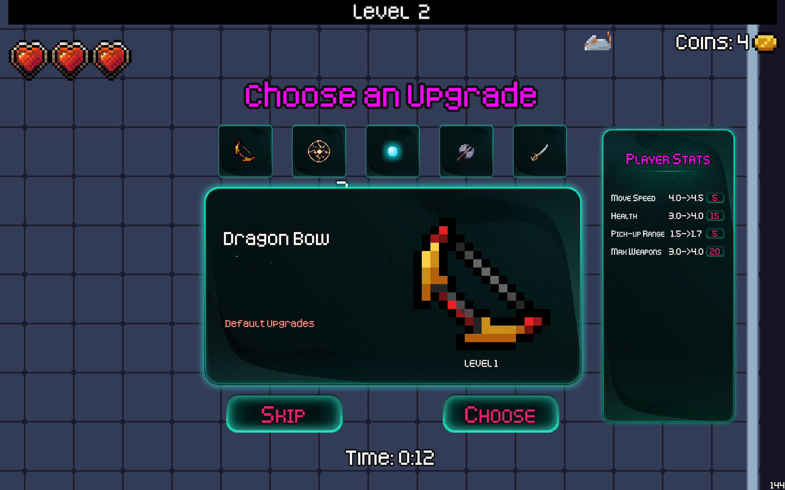
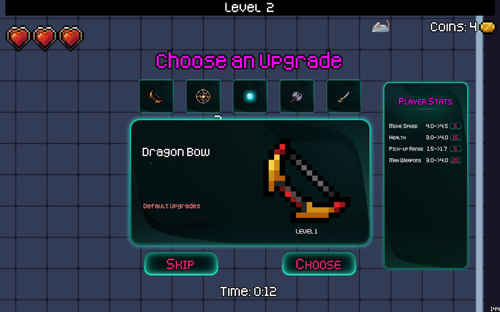

My Projects
Throttlestop TPL Automation
This project provides automation of ThrottleStop's Turbo Power Limits configuration/profiles, including PL1, PL2, and TTL adjustments, and integrates with Windows power plans.
Throttlestop TPL Automation
This project provides a batch script to automate the configuration of ThrottleStop's TPL (Turbo Power Limits), including adjusting PL1, PL2, TTL (Turbo Time Limit), and other settings. It also integrates custom Windows power plans for enhanced CPU power management.
Features
- Profile Automation: Automatically switches ThrottleStop profiles based on user-defined arguments.
- Advanced TPL Configuration: Customizes PL1, PL2, and TTL for fine-tuned CPU power control.
- Windows Power Plan Integration: Applies matching Windows power plans to align with ThrottleStop profiles.
- Backup: Creates the backup of the ThrottleStop.ini with initial user's unchanged settings backup-ThrottleStop.ini.
- Clamping: Allows clamping of PL1 and PL2 values by appending "c" or "C" to the values.
Requirements
- Install ThrottleStop
and Lenovo Legion
Toolkit on your system.
- Ensure you have the correct paths to ThrottleStop.exe and ThrottleStop.ini.
- A basic understanding of your system's power and performance requirements.
- Enable Start Minimized: For seamless starting/restarting of ThrottleStop.exe, ensure the "Start Minimized" option is checked in ThrottleStop -> Options -> Miscellaneous -> Start Minimized.
Installation
- Clone this repository to your local machine:
git clone https://github.com/ZSungat/ThrottlestopTPLAutomation.git - Download batch file from Releases
- Download from Direct download link
Lost Survivors | High School Diploma Project
This project is a small 2D roguelike survival game developed in Unity using C#. It is designed for a wide audience, including hardcore gamers, survival fans, and casual players.This Project took the inspirations from the popular game Vamparie Survivors.
Lost Survivors | High School Diploma Project
This project is a small 2D roguelike survival game developed in Unity using C#. It is designed for a wide audience, including hardcore gamers, survival fans, and casual players. This project took inspiration from the popular game Vampire Survivors.
Toward the end of my high education, I chose the theme of my diploma project, which was "2D Game Development". Making this project as a solo developer was quite hard, interesting and fun.This project was made in C# using Unity 2D Game Engine.
The game design mirrors elements from Vampire Survivors, focusing on delivering a unique and challenging experience. The development process involved using Unity's features to implement collision physics, interaction animations, and real-time algorithm optimization. Throughout the development, I explored into advanced techniques within the Unity environment. This included:
- Developing scripts for player and enemy behavior: Implementing game logic, interactions, and character actions
- Optimizing performance for various platforms: Ensuring smooth gameplay across different devices.
- Incorporating health systems, damage calculations, and visual effects: Enhancing gameplay with dynamic elements.
In this 2D survival game, you begin each run equipped with a randomly assigned weapon. Your goal is to withstand relentless waves of enemies swarming toward you. Defeating enemies rewards you with experience points and, with a 50% chance, coins. The experience you gather allows you to level up, unlocking opportunity to access the upgrade panel, where you can enhance your survival abilities.To improve your survival experience you need to spend coins:
- Weapon upgrades: Boost the power and efficiency of your current weapon, making it deadlier against stronger enemies.
- New weapons: Add more weapons without replacing your current weapon, giving you versatile options for dealing with enemies.
- Player stat enhancements: Strengthen your character with increased health, speed, or other attributes to endure tougher challenges.
Survive as long as possible!
The game currently has no definitive ending. Each attempt is a time-based challenge where your survival duration becomes a score you can share with friends and competitors. Compare your best times and strive to beat their records!
Making this game was really hard! It took a lot of time and effort, and I made many mistakes along the way. Sometimes, I even had to start over completely multiple times. But each time I did, I learned something new and made the game better.
In the end, this project was made me learn how to make games and how hard it is. It was a fun way to learn about game development and improve my skills. Now, the game is available for people to play on computers and Android phones.
Installation
- Play the game through Live embeded Game
- Download installer from Github Releases
- Download through Direct link:

 
